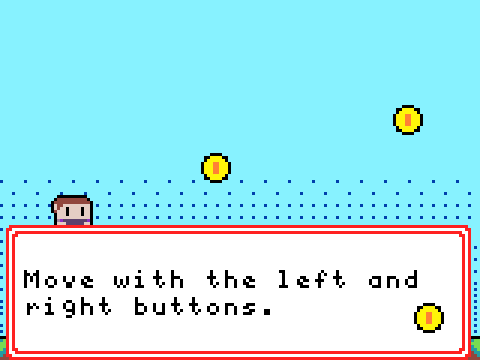

ألعاب صغيرة.
وإمكانات كبيرة.
من الفضول إلى Computational Thinking. رحلة تطبيقية في Game Development باستخدام Microsoft MakeCode Arcade.

أربع ألعاب. وتدرّج واضح.
البداية مع Events، ثم بناء الأنظمة، وصولاً إلى عالم يصمّمه الطالب بنفسه.
معاينات أصلية للمشاريع من خدمة الصور المصغّرة في Microsoft MakeCode. تتضمن كل خطة تدريس لقطات فعلية من Simulator وملفات المصدر التي تمت مراجعتها. تُحفظ الصور بلغتها الأصلية حفاظاً على أصالتها.
كل مشروع يمهّد لما يليه.
بالتطبيق نتعلّم. وبالشرح نرسّخ الفهم.
العب وتوقّع
يلاحظ الطلاب اللعبة المرجعية ويحدّدون قواعدها، ثم يتوقّعون Events وVariables التي تنتج هذا السلوك.
شاهد وطبّق
يعرض المدرّب ميزة صغيرة عملياً، ويعيد الطلاب بناءها في أزواج، ثم يشرحون تتبّع Code بأسلوبهم.
اختبر وتأمّل
يعدّل الطلاب Parameter واحداً، ويسجّلون النتيجة، ويختبرون Edge Case مع زميل، ثم يبرّرون قرار التصميم النهائي.
بيئة تدريب بسيطة وفعّالة
حاسوب لكل متدرّب أو لكل اثنين، ومتصفّح حديث، واتصال بالإنترنت لتحميل المشاريع ومشاركتها، ولوحة مفاتيح أو أدوات تحكّم على الشاشة، وسماعات اختيارية. تُستخدم أدوات MakeCode Arcade: Editor وSimulator وSprite Editor وTilemap Editor. لا حاجة إلى جهاز ألعاب فعلي.
متطلبات الالتحاق: مهارات الكتابة الأساسية والتنقّل في المتصفّح والحساب البسيط. لا تُشترط خبرة سابقة في Programming. تُحفظ نسخة احتياطية قابلة للتحرير من المشروع في نهاية كل جلسة.
ما يتجاوز إنجاز أربع ألعاب.
يختتم الطلاب البرنامج بملف إنجاز يستطيعون عرضه وشرح مكوّناته وتطويره.
- تحويل قواعد اللعب إلى Events وConditions.
- توظيف Variables وArrays وLoops وFunctions لتحقيق غرض واضح.
- تحليل Coordinates وMotion وCollision Detection وGame State.
- تشخيص العيوب باختبارات قابلة للتكرار.
- شرح قرارات التصميم من خلال عرض موجز للعبة.
تقييم ملف الإنجاز
معايير تقييم مقترحة لكل مشروع. يتحقّق المدرّب من أدلة التعلّم قبل الانتقال إلى المرحلة التالية.
التسليم النهائي: أربعة مشاريع قابلة للتحرير، وروابط للعب أو نسخ احتياطية محلية، وسجلات اختبار، وعرض لملف الإنجاز. معيار الإتقان المقترح: 70% مع إثبات عمل جميع Game Mechanics الأساسية.
المهارات التي يغطيها البرنامج
مسار منظّم ينتقل بالطالب
من اللعب إلى الإبداع.
أربعة مشاريع هادفة. ومهارات Programming قابلة للتطبيق في سياقات جديدة.